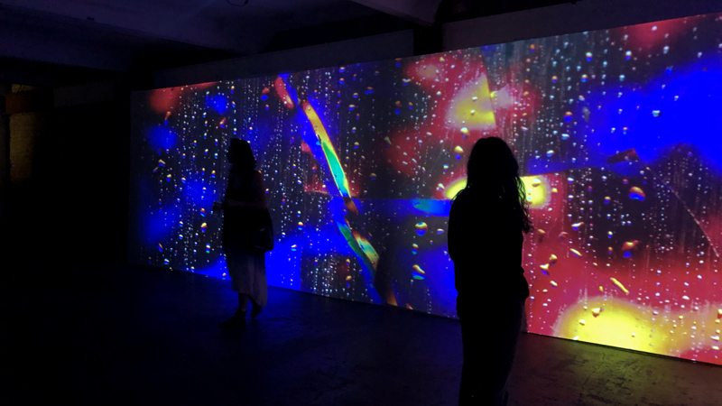
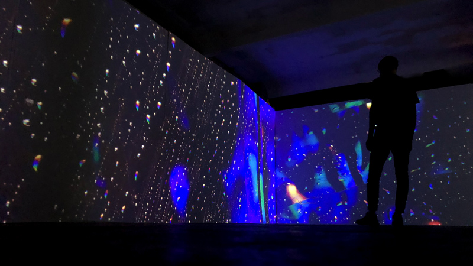
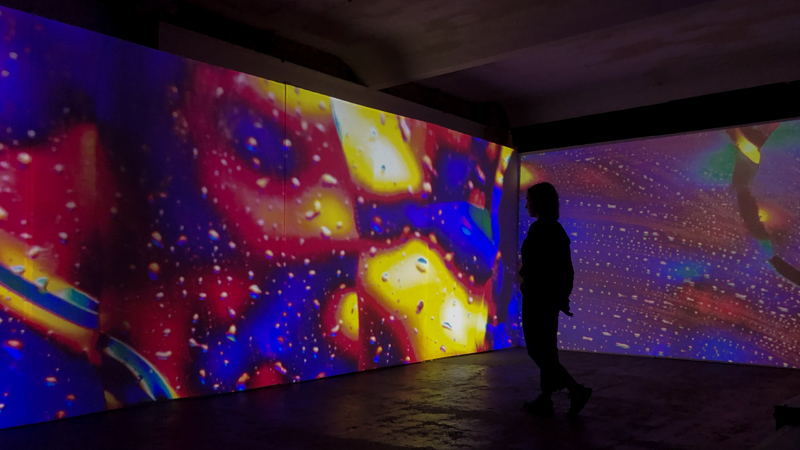

Overclocked

This video work presents real-life microscopic footage of supercomputers under physical strain as they perform intensive AI training. The film captures the invisible labour of machines - circuitry sweating, components pulsing, and heat dissipating through liquid cooling systems. What appears cold and computational reveals an uncanny sense of exhaustion, a mechanical body pushed to its limits. In magnifying this hidden choreography, the work invites viewers to reflect on the material and energetic toll of artificial intelligence.

PAST SCREENING
Shibuya Crossing - NEO Shibuya TV - Tokyo
Kühlhaus - BYOB - Berlin
